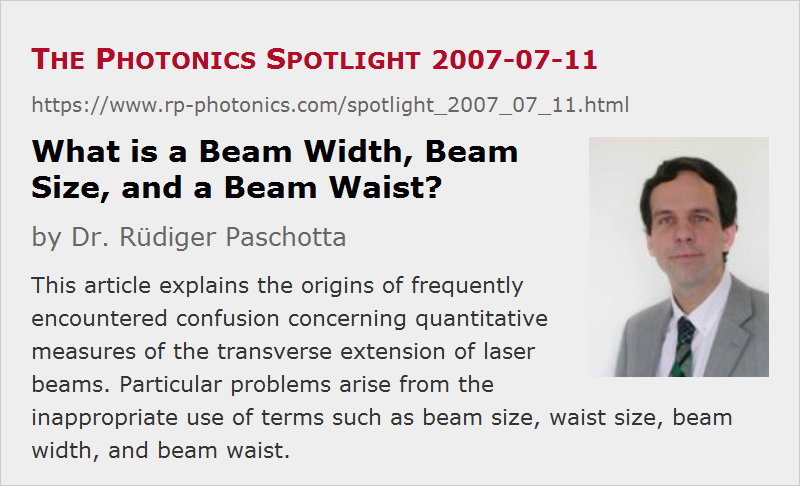

What is a Beam Width, Beam Size, and a Beam Waist?
Posted on 2007-07-11 as a part of the Photonics Spotlight (available as e-mail newsletter!)
Permanent link: https://www.rp-photonics.com/spotlight_2007_07_11.html
Author: Dr. Rüdiger Paschotta, RP Photonics Consulting GmbH
Abstract: This article explains the origins of frequently encountered confusion concerning quantitative measures of the transverse extension of laser beams. Particular problems arise from the inappropriate use of terms such as beam size, waist size, beam width, and beam waist.

Ref.: encyclopedia articles on beam radius and beam divergence
Scientists as well as engineers are expected to communicate clearly, minimizing the risk of misunderstanding. Surprisingly, certain wordings, which constantly cause confusion, are very abundant in the scientific and technical literature. Some of those are related to the transverse extension of laser beams:
- Terms like “beam size”, “waist size”, “beam width” and alike are suitable only for qualitative statements like “The beam size sharply increases as the resonator length approaches the stability limit”. But nobody knows for sure whether some “size” or “width” refers to beam diameter or beam radius. The former meaning may seem more plausible, but the latter is frequently meant. So such imprecise wording easily introduces an error of a factor of 2 in dimensions, and a factor of 4 in the beam area.
- Some researchers should realize that the beam waist is essentially the same as the waist of human being: the part where the transverse extension is smallest. It is certainly not a diameter or radius, measured just anywhere along the beam.
- A similar analogy occurs when quantifying the diameter either of a laser beam or a lady. In the latter case, it should be made clear whether one measures only the extent of dense matter or also includes the aura in some way. The latter is obviously more difficult, but perhaps also more relevant. For laser beams, one may measure e.g. up to points where the intensity decreases to 1/e2 or to 50% of the maximum intensity, or one may use some variance-type integral. The results can strongly depend on the used definition.
- Essentially the same issues arise in the context of quantifying a beam divergence. While manufacturers of laser diodes seem to prefer FWHM angles, scientists are more likely to use values based on half-angles measured at 1/e2 intensity.
So my suggestion is to avoid a lot of confusion by making precise statements on all quantitative aspects of laser beams. Even in scientific papers, one all too often finds oneself in a situation where one has to construct sophisticated theories concerning what the author might have meant.
This article is a posting of the Photonics Spotlight, authored by Dr. Rüdiger Paschotta. You may link to this page and cite it, because its location is permanent. See also the RP Photonics Encyclopedia.
Note that you can also receive the articles in the form of a newsletter or with an RSS feed.
Questions and Comments from Users
Here you can submit questions and comments. As far as they get accepted by the author, they will appear above this paragraph together with the author’s answer. The author will decide on acceptance based on certain criteria. Essentially, the issue must be of sufficiently broad interest.
Please do not enter personal data here; we would otherwise delete it soon. (See also our privacy declaration.) If you wish to receive personal feedback or consultancy from the author, please contact him e.g. via e-mail.
By submitting the information, you give your consent to the potential publication of your inputs on our website according to our rules. (If you later retract your consent, we will delete those inputs.) As your inputs are first reviewed by the author, they may be published with some delay.
|  |
If you like this page, please share the link with your friends and colleagues, e.g. via social media:
These sharing buttons are implemented in a privacy-friendly way!